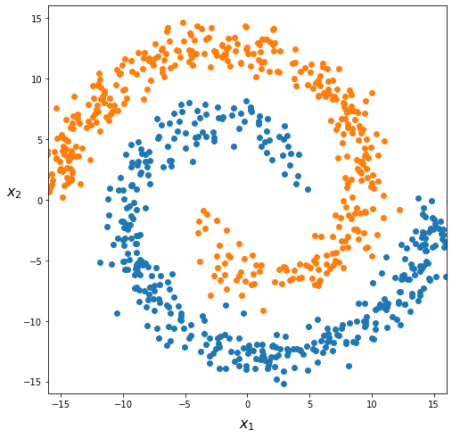

Neural Network Part I
Neural Network Part I#
Recreating spiral dataset from source
import numpy as np
from numpy import pi
import matplotlib.pyplot as plt
from myst_nb import glue
N = 400
theta = np.sqrt(np.random.rand(N))*2*pi # np.linspace(0,2*pi,100)
r_a = 2*theta + pi
data_a = np.array([np.cos(theta)*r_a, np.sin(theta)*r_a]).T
x_a = data_a + np.random.randn(N,2)
r_b = -2*theta - pi
data_b = np.array([np.cos(theta)*r_b, np.sin(theta)*r_b]).T
x_b = data_b + np.random.randn(N,2)
res_a = np.append(x_a, np.zeros((N,1)), axis=1)
res_b = np.append(x_b, np.ones((N,1)), axis=1)
res = np.append(res_a, res_b, axis=0)
np.random.shuffle(res)
fig = plt.figure(figsize=(8, 8))
plt.scatter(x_a[:,0],x_a[:,1])
plt.scatter(x_b[:,0],x_b[:,1])
plt.xlabel(r"$x_1$", fontsize=16, labelpad=10)
plt.ylabel(r"$x_2$", fontsize=16, labelpad=10, rotation=0)
plt.xlim([-16, 16])
plt.ylim([-16, 16])
glue("spiral_data", fig, display=False)
